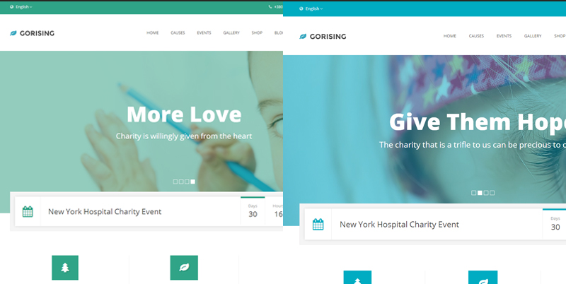

Thank you for purchase GoRising HTML template
GoRising HTML template is charity template with great looking, super clean design and awesome functionality. It is fully responsive and retina ready. Bootstrap v3.2.0 based and it comes in with 50 HTML5/CSS3 pages in package. Separated stylesheets so you can change main color or overall layout easily. All in all GoRising HTML template is unique charity template which provide really wide range of possibility for customization.
Features
Super Clean Design
Boxed & Wide Layout
Latest Bootstrap v3.2.0
Single Pages Ready
Separated CSS Stylesheets For Main Color And Overall Box Styles Customisation (color.css & box.css)
WooCommerce Shop Prepared Pages
Newsletter Widget
Retina Ready
Responsive
Calendar Events With Popout On Click
Featured Bootstrap Slider
Events Count Down Timer
300+ Font Awesome Icons
Smooth Page Preloader
50 HTML5/CSS3 Pages
W3C HTML5 Valid
Gallery Lightbox
Search Causes Widget
15+ Different Widgets
Sticky Navigation
Comment Form
Contact Form
Donate Form
Language Drop Down
Neat 404 Page
Explain Action Tooltips
Supper Commented And Clean Code (Sublime Text 3 Used For Development And Formatting)
50 Pages
Home (2 layouts)
Causes (6 layouts)
Events (7 layouts + 2 calendar with events modal layouts)
Gallery (5 layouts)
Shop (4 layouts)
Blog (6 layouts)
Contact (2 layouts)
Pages (6 layouts)
404
About
Typography
Grid
Elements (vertical & horizontal tabs, gorising buttons, accordion & progress bar)
Folders & Files Structure
GoRising HTML Template comes in zip package. So when you download your zip package extract it somewhere on your computer, open 1_HTML folder and start browsing. This folder looks like this:
So you will see basic folder structure with HTML files. Main folders with explanation:
CSS Structure
CSS - This folder contains spearated CSS files which we use to call styles for our theme. Important is to mention that there is two main CSS files which will be used for easier editing and changing main color and boxes trough GoRising HTML template. Those two styles are color.css and box.css, you can see them marked on the screenshot below, later we will explain how to properly use it. All other CSS files of course can be edited if you are advanced user, but if you are begineer you can avoid editing of those files.
Another important CSS file for us is style.css which is in the main root folder. This stylesheet is actually complete style of the template and if you would like to customize any part of the website style you can do that trough style.css. Here are the screenshots:
All other CSS files are important of course but not on the level of three stylesheets we mentioned above and we recommend to use other CSS for editing only if you are advanced user.
Fonts Structure
Fonts - In fonts folder we store only Font Awesome Icons font icons which we need for all icons of GoRising template. This you can edit/delete/replace only if you will use some other icon font. In screenshot below you can see structure:
Images Structure
Images - For GoRising HTML template we used real images but you will get package with images folder where are used placeholder. Anyway you can easily replace them by your own images. Youc an check screenshot to see how it looks like.
JS Structure
JS - In JS folder are several javascript plugins which will we use for better experience on GoRising template. Most important for editing overall JS functionality is custom.js. Here you can see screenshot of basic file and folder structure:
PHP Structure
PHP - There is only one file which we use to create modal for events and it is named show_data.php. We will use it for calendar events so when we click on some specific event we will get some info in modal, that info is stored in this file. Check screenshot
HTML Structure
Head of the document
First thing we need to do is to open index.html file with some text editor. So after open index HTML let's see the main heading structure:
Foot of the document
Beside this if we skip all the content we will come to the footer where we call all JS files. See screenshot for basic explanation:
Body of the document
Main structure of the body document is classic bootstrap grid where we use:
CSS Structure
Main style.css structure is based on latest CSS3 technique. When you open style.css you will see table of content and than all style below commented like table of contents so you can find easily all css properties:
Responsive part of this stylesheet is at the bottom of it:
color.css
This color.css stylesheet is helper stylesheet which allow really easy way to change main overall color of the website so we can easily create any color scheme we like with just around 120 lines of CSS codes. Let's check screenshot:
Right after that you can get any color scheme you like.

box.css
This box.css stylesheet is helper stylesheet which allow really easy way to change main overall style of the boxes in just around 60 lines of CSS code. Check screenshot:
So after editing this small file we can get completely new overall layout, with or without shadows, squared or rounded corners and so on. CHeck example of squared with shadow and rounded without shadow screenshot:
JS Structure
Beside all JS files custom.js file is most important for us and it is well commented. Ccheck screenshot:
Here you can change basic behavior of different things like preloader fading, speed of dropdowns opening and so on.
Boxed or Wide Layout
In order to change layout to be boxed (because it is wide by default) all you need to do is to wrap all content except preloader in:
<div class="main-wrap">
</div>
And automaticaly website will be boxed. Check screenshot below:
Beside that you will need to edit style.css, actually body tag where you can add solid color or some background image. Check screenshot below:
Now you can play around with your settings.
Image, Box And Content Sliders Structure
This is very easy to explain because we use Bootstrap v3.2, so if you stuck somewhere just open official BS documentation website. We will explain one and all other are actually same. All sliders have basic structure like screenshot below:

Fonts & Changing
In order to change main font is GoRising template all you need to do is to replace 2 lines of code. One is index.html and another in style.css. Check screenshot below:
Events Calendar
All 'science' behind this part is actually understanding that we call calendar with just one line of code, all other is auto generated from zabuto-calendar.js (which is script for calendar) and all data in calendar including dates and modals with events are in show_data.php. That is it.
So if you want to create any event in calendar simple open show_data.php and edit array of events:
In order to better understand relation between back and front end check this screenshot and compare it with above screenshot (eg. 1. 2. 3.):
Events Down Count
Events count down is also important to be explained. We use script downCount.js to make counters. But what is really important here is custom.js file and COUNT DOWN commented part. See screenshot:
Causes Filter And Bars (widget and boxes)
We find usefull to explain bars too. It is really simple and it is all front-end driven. We use static bars for status of some charity cause and also we use bars for filtered search which can be slided. So there is only one tiny true and false differnce. Here is screenshot which explain bars briefly: